Our design initially implemented 9 sensors, 6 DC motors, 3 Motor Drivers, and a speaker/amplifier circuit.
Overarching Introduction
This report details the hardware and software architecture as well as the strategy implemented for our "Bots & Pans" robot project. Our approach utilized a master-slave Arduino setup with a custom communication protocol to create a robust autonomous system capable of navigating the kitchen environment, interacting with the pot, turning on the stove, and dropping ingredients as required by the competition rules. Further, the hardware for our project integrates our software system with a robust hardware platform that initially incorporated nine sensors (including ultrasonic and IR arrays), six DC motors paired with three motor drivers, and a speaker/amplifier circuit for electromechanical feedback. Finally, our mechanical design makes for a robust ease of placement and wiring for our electrical components while maintaining all necessary functions and specifications to work with our strategy.

From left to right: Mario Sumali, Spencer Seay, Sutton Yazzolino, and Shane Mion

ME210 Winter 2025: Bots & Pans - Software Strategy Report
Introduction
This report details the software architecture and strategy implemented for our "Bots & Pans" robot project. Our approach utilized a master-slave Arduino setup with a custom communication protocol to create a robust autonomous system capable of navigating the kitchen environment, interacting with the pot, turning on the stove, and dropping ingredients as required by the competition rules.
Software Architecture Overview
Master-Slave Configuration
We implemented a distributed computing approach using two Arduino microcontrollers:
- Sensor Arduino (Master): Responsible for sensor data collection, state machine management, decision-making logic, and secondary motor control (ball drop and ignitor arm mechanisms).
- Motor Arduino (Slave): Dedicated to controlling the four-wheel drivetrain based on commands received from the master Arduino.
This separation of concerns allowed us to distribute computational load and create more manageable code modules while providing functional isolation between critical systems.
Communication Protocol
The communication between the two Arduinos is managed by a custom serial protocol (defined in SerialProtocol.h) that includes:
- Structured message format with start/end bytes (0xFF/0xFE)
- Message type differentiation (commands, acknowledgments, errors)
- Data length and payload fields
- Checksum verification for error detection
- Timeout handling for reliable communication
This protocol ensures robust communication between the Arduinos, with acknowledgment mechanisms to confirm command execution and error handling to recover from communication failures.
State Machine Design
The core of our control system is a finite state machine implemented on the Sensor Arduino with the following states:
- IDLE_START: Initial waiting state that transitions to orientation after a brief delay
- INITIAL_ORIENTATION: Uses ultrasonic sensors to establish position relative to walls
- LOCATE_POT: Implements a search pattern to find the pot using IR sensors
- APPROACH_POT: Executes a sequence to move toward the detected pot
- PUSH_POT: A brute force alternative approach for pot location and positioning
- TURN_STOVE_ON: Controls the ignitor arm to activate the burner
- DROP_BALLS: Operates the ball drop mechanism to deliver ingredients
- BACK_TO_LOAD: Returns to the loading area for more ingredients
- BACK_TO_POT: Returns to the pot area to deliver ingredients
- END_STATE: Handles end-of-competition behaviors
- ERROR_STATE: Handles error conditions and attempts recovery
- DUCK_STATE: Emergency stop state
This state machine design provides a clear flow of operation while allowing for graceful error handling and recovery, with the flexibility to adapt to different competition situations.
Sensor Integration
Ultrasonic Sensors
Four ultrasonic sensors (front, left, back, right) are used for:
- Wall detection during initial orientation
- Establishing proper positioning within the kitchen environment
- Determining absolute position based on distance measurements
The function measureDistance() provides distance readings
in centimeters, while isProperlyOriented() uses these
readings to confirm correct positioning relative to walls.
IR Sensors
Four IR sensors were constructed and coded to be utilized to detect the pot's position:
- LEFT_OUTER_SENSOR
- LEFT_CENTER_SENSOR
- RIGHT_CENTER_SENSOR
- RIGHT_OUTER_SENSOR
The purpose of these sensors was detect to the IR beacon on the pot (emitting at 3333 Hz for Side A or 909 Hz for Side B) and update the potPosition variable based on which sensors are triggered. This process worked when testing in isolation; for example, when the robot was placed in front of the IR sensor (at any distance), but when our robot was executing its programmed strafing mechanism, the sensors did not catch the IR. Thus, we resorted to simplest principles and coded the robot to work independently of the IR sensors.
Motor Control Strategy
Movement Commands
The motor control system implements several basic movement functions:
- Forward/backward movement at normal and slow speeds
- Left/right lateral movement (strafing)
- Rotational movement (turning left/right)
Each motor direction is controlled independently using the
setMotor() function, allowing precise control of the
robot's movement including holonomic (omnidirectional) movement
capabilities.
Safety Features
Several global mechanisms were implemented to adhere to our requirements and :
- Global timeout (130 seconds, 2min:10sec) after which all motors and speakers are stopped
- Command timeout checking with error state transition
- Emergency stop capability via the main power switch
- Acknowledgment system to verify command execution
Key Software Components
Initial Orientation Logic
The orientation system follows a step-by-step approach:
- Rotate until both left and back walls are detected at appropriate distances
- Execute a sequence of movements (backward, left, forward) to establish a known position
- Transition to the next appropriate state once orientation is confirmed
This approach ensures the robot begins operation from a consistent, known position regardless of its random starting orientation.
Pot Finding Strategy
We implemented two methods for pot interaction:
Sensor-based method (LOCATE_POT and APPROACH_POT):
- Uses IR sensors to detect the pot beacon
- Alternates between strafing right and left to locate the pot
- Once detected, executes a two-step approach sequence
Predefined movement method (PUSH_POT):
- Follows a six-step sequence of movements
- Executes strafing, forward/backward movements in a pattern
- Does not rely on sensor feedback, making it more robust in noisy environments
The second approach proved more reliable in competition conditions and became our primary strategy.
Ball Delivery Cycle
Our system implements a complete ingredient delivery cycle:
-
Ball Drop (DROP_BALLS):
- Controls the ball drop motor for a precise duration
- Uses pulsed movement for reliable ball release
- Tracks the number of cycles completed
-
Return to Loading (BACK_TO_LOAD):
- Three-step sequence to return to the ingredients area
- Includes a non-blocking wait time for manual loading
-
Return to Pot (BACK_TO_POT):
- Three-step sequence to return to the pot
- Positions the robot optimally for the next ball drop
-
Cycle completion:
- After 8 ball drop cycles, transitions to END_STATE
- Otherwise, continues the cycle to deliver more ingredients
This cyclical approach maximizes points by delivering multiple batches of ingredients.
End-of-Competition Behavior
The END_STATE implements a complex sequence:
- Move backward slightly to create space
- Toggle the ignitor arm to turn off the burner
- Execute a sequence to move toward the customer area
- Demonstrate completion with a celebratory ignitor arm toggle
Timing and Synchronization
Non-Blocking Design
We implemented non-blocking timing throughout the code:
- Based on millis() rather than delay() where possible
- State transitions tracked by start times rather than blocking waits
- Allows sensor monitoring to continue during timed operations
Global Timeout Management
A global safety timeout system ensures the robot stops after the competition duration:
- Set in setup() with globalStartTime = millis()
- Checked at the beginning of each loop iteration
- After 130 seconds, all motors stop and the robot enters DUCK_STATE
- Prevents uncontrolled operation beyond competition time
Communication Flow
The message flow between Arduinos follows this pattern:
- Master sends command with parameters
- Slave executes command for specified duration
- Slave sends acknowledgment upon completion
- Master processes acknowledgment and proceeds to next action
Timeouts are carefully managed:
- Commands time out after 5 seconds if no acknowledgment is received
- Error handling triggers state transitions to recover from failures
- Clear command completion flags coordinate sequenced movements
Error Handling and Recovery
Several error handling mechanisms were implemented:
- Command timeouts: If no acknowledgment is received within 5 seconds
- Error state transitions: Halts operation and attempts recovery
- Checksum verification: Ensures command integrity
- Global timeout: Prevents runaway operation
When an error is detected, the system:
- Stops all motors immediately
- Transitions to ERROR_STATE
- Waits 5 seconds to allow conditions to clear
- Attempts to restart from INITIAL_ORIENTATION
Software Design Rationale
Why a Master-Slave Architecture?
We chose the master-slave architecture for several reasons:
- Resource Distribution: Separates sensor processing from motor control
- Fault Isolation: Errors in one system don't necessarily affect the other
- Simplified Development: Allowed parallel development of separate components
- Modularity: Clear separation of responsibilities between Arduinos
Why a State Machine?
The state machine design was selected because:
- Clear Operational Flow: Each state has specific entry/exit conditions
- Easier Debugging: State transitions can be monitored and logged
- Compartmentalized Logic: Each state's behavior is contained and manageable
- Resilience: The system can recover from errors by returning to known states
Why Implement a Custom Communication Protocol?
The custom protocol provides:
- Reliability: Acknowledgment system ensures commands are executed
- Error Detection: Checksum verification prevents corrupted commands
- Flexibility: Different message types for various communication needs
- Structure: Well-defined format makes message parsing straightforward
Brute Force vs. Sensor-Based Approaches
After testing, we found that a more deterministic approach with predefined movement sequences (PUSH_POT state) proved more reliable than purely sensor-based methods:
- Environmental Robustness: Less affected by sensor noise or calibration issues
- Predictability: Consistent behavior in competition conditions
- Simplicity: Reduces complexity in decision-making logic
- Reliability: Higher success rate in repeated testing
However, we maintained the sensor-based methods as fallbacks and for initial orientation.
Conclusion
Our software strategy prioritized reliability, modularity, and robustness. The master-slave architecture with a state machine design allowed us to create a system capable of handling the complex sequences required for the competition while maintaining resilience to errors and unexpected conditions. The custom communication protocol ensured reliable operation between the two Arduinos, creating a cohesive system that effectively navigated the kitchen environment and completed the required tasks.
The implementation of multiple approach strategies (sensor-based and predefined) provided flexibility, while the cyclical ball delivery system maximized scoring opportunities. Global timeout handling and comprehensive error recovery made the system robust in competition conditions.
Future Improvements
- Advanced Sensor Fusion: Combine ultrasonic and IR sensor data for more accurate positioning
- Dynamic Path Planning: Replace predefined movement sequences with adaptive pathfinding
- PID Control: Implement closed-loop control for more precise movements and positioning
- Machine Learning: Train the system to identify optimal strategies based on competition scenarios
- Enhanced Communication Protocol: Add additional message types for more nuanced interactions
- Visual Feedback: Add LED indicators for state visualization and debugging
- Adaptive Ball Drop Mechanism: Adjust motor speed based on feedback from previous drops
- Improved Error Classification: Distinguish between different types of errors for more specific recovery strategies
Hardware Architecture Overview
Sensors
IMU (Inertial Measurement Unit)
We planned to use the accelerometer and gyroscope on this device to get an initial orientation of the robot so that it could correct its movements based on its known position. Ultimately, the IMU was too inaccurate to be used and we could not fix it in software, so we decided not to use this sensor.
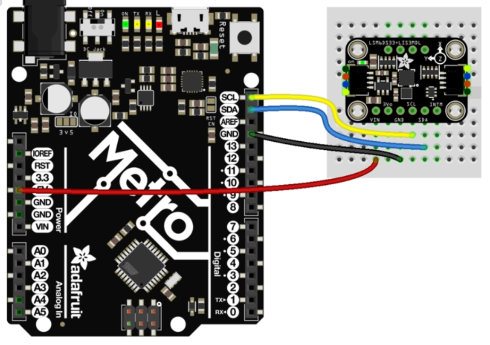Ultrasonic Sensor
We placed these sensors low on the robot in order to be able to sense the distances between the robot and the walls for initial orientation. We also planned to utilize these for orientation later in the round to help find the pantry and avoid collisions.
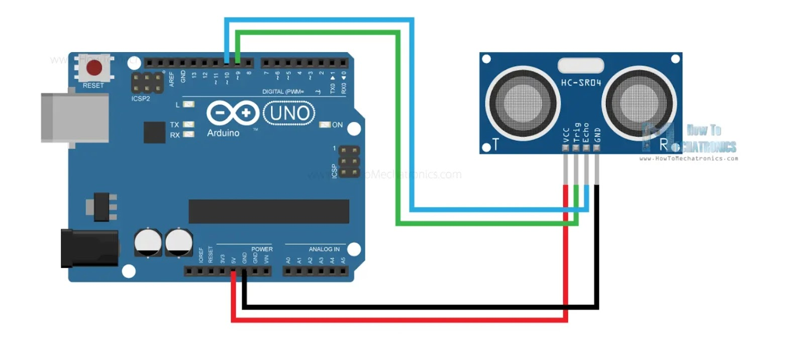IR Sensor
We chose to implement four of the IR sensors from lab 1 for redundancy and to read a larger area. Since the signal acceptance angle is 10 degrees for the IR phototransistors we were given, we wanted to position 4 to cover a greater area and be better able to find the IR emitter. We made one alteration from the lab 1 implementation of this circuit: increased the gain. We swapped the resistor for a larger one in order to increase the sensitivity of the phototransistor which in turn increased the distance we could sense the emitter from.
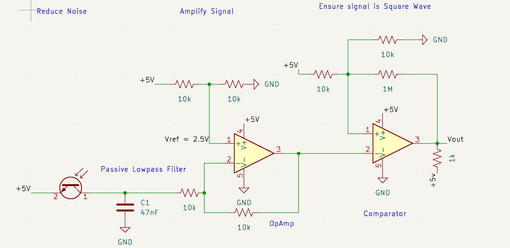Motors & Motor Drivers
We chose to use the DC motors and Motor Drivers from lab 2 due to their availability, our familiarity with them, low cost, and suitable speed/torque specifications. Although DC motors make it more challenging to track the robot’s position due to the inability to count wheel rotations, we opted to use sensor-based positioning instead.
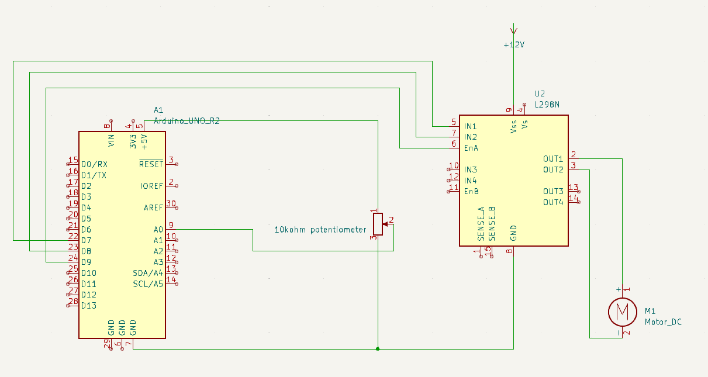Speaker and Amplifier Circuit
A speaker and amplifier circuit was used to play music during competition, fulfilling the requirement of having an electromechanical indication of operation. This approach was chosen because it was fun, simple to implement, and low-cost—especially since one team member had previously built the circuit for another class.

Hardware Design Rationale
Our initial game plan included most, if not all, of these sensors to allow for redundancy and multiple backup strategies. We implemented all the sensors from the more complex plan during the building phase so we could later choose which ones to use during testing. Ultimately, due to issues with some sensors and time constraints, we simplified the approach.
Discussion
The circuit design was relatively straightforward, though we faced challenges such as fragile wire connections and selecting the correct pins on the Arduino. Wire connections were often compromised during battery connection/disconnection, so we used hot glue to secure them. Additionally, the Arduino Uno’s dedicated PWM pins (490Hz or 980Hz) were used to achieve more accurate speed control, after finding that software-based PWM on non-dedicated pins affected performance.
Hardware Conclusion
In conclusion, the hardware solutions chosen for this project provide a robust foundation for reliable performance and future scalability. Each component—from the central processing unit to the specialized peripherals—was carefully evaluated based on functionality, compatibility, and longer-term needs. By balancing cost-effectiveness with technical capability, the hardware architecture met current requirements while leaving room for future upgrades. This selection not only achieved immediate performance benchmarks but also positions the project for more complex future implementations.
Design and Implementation
We split our design into two “levels” to physically separate our parts. The goal of this was to make it easy to start prototyping our driving and all of its related sensors while we were still spending time designing our ball dropper / igniter / IR phototransistor sensor systems. These were connected by standoffs for easy assembly integration. Eventually, this top level was split into another level which supported a breadboard with our IR phototransistor to accommodate these being at the height of the IR LEDs.
Bottom Layer
Because the ethos of our design was to be able to build off of our existing parts as much as possible, we knew that we wanted our design to efficiently lay out components as well as save space for components that we would need to add haphazardly later. As such, we designed our bottom base as large as possible, driven by a 11.75” square to allow some room for tolerancing.
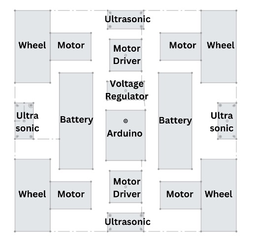
After laying out the essential components, we made space for standoffs to be mounted, space for wires to pass through the board, and added various extra holes for mounting any components we may deem necessary later.

This part of the design process came in tandem with designing our brackets for our ultrasonic sensors and motors to ensure the drive level could be completed as soon as possible.
Our ultrasonic sensor bracket allows for the sensor to be friction fit for easy implementation. Moreover, it has holes through it for easy wiring.
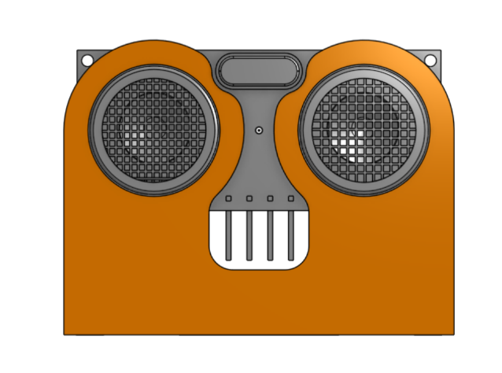 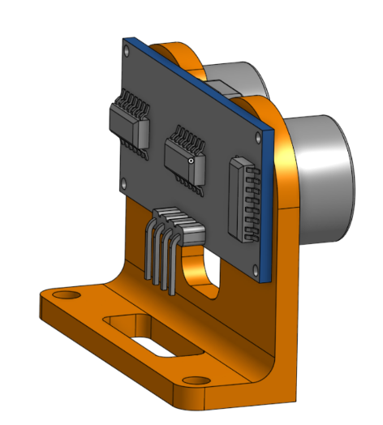
We designed a simple bracket for the motor based on its online technical drawings. However, we at first found that it was flexing too much to do the weight of the robot and position of the wheels applying a moment. To address this, we added a diagonal support and found this worked quite well.
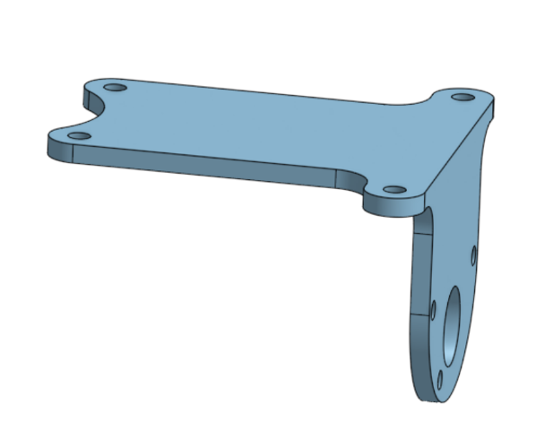 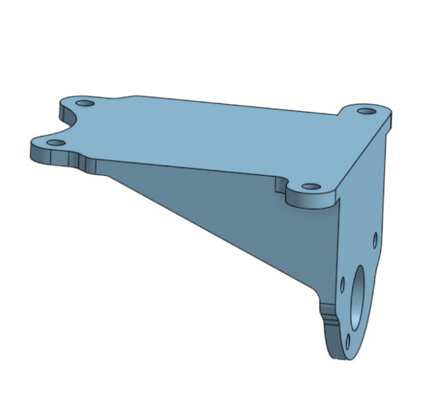
This gives us a final base that looks something like this:
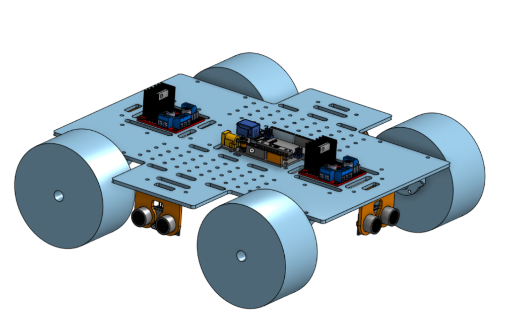
Top Layer
For our top layer, we started by designing the ball drop mechanism as that is the most important (and space consuming) part of the assembly. We wanted to keep the mechanism as simple as possible. We felt that a sloped ball-dropper geometrically was difficult to implement given the 12” max height and the 10” top of the bin, so we elected to use a spinner mechanism driven by one motor. The concept was a spinner with prongs to spin each ball and a guide rail to force the ball along a path off the robot. This concept drew design inspiration from tennis ball machines and gumball machines.
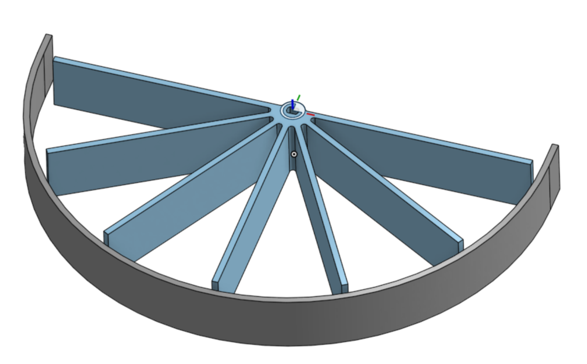
After making a cutout for screw holes, lightweighting the design, and building out the guide, the assembly looked like so:
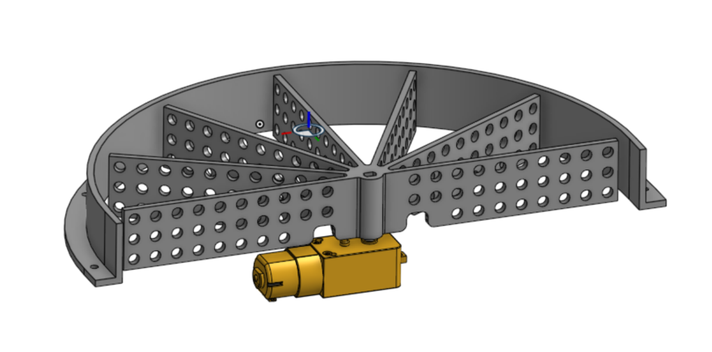
With the ball spinner mechanism complete, we went ahead and filled out the top plate.
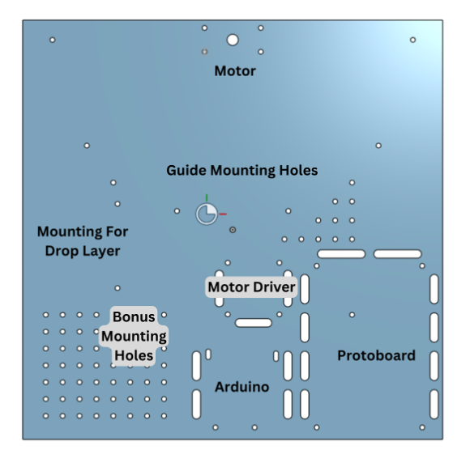
We then laid out a mini layer that drops down to ensure that the IR phototransistor and ignitor arms are at the proper height.
 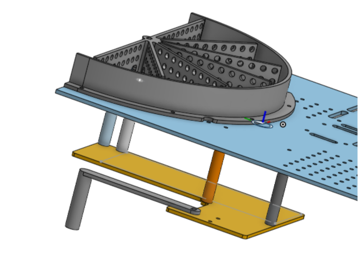
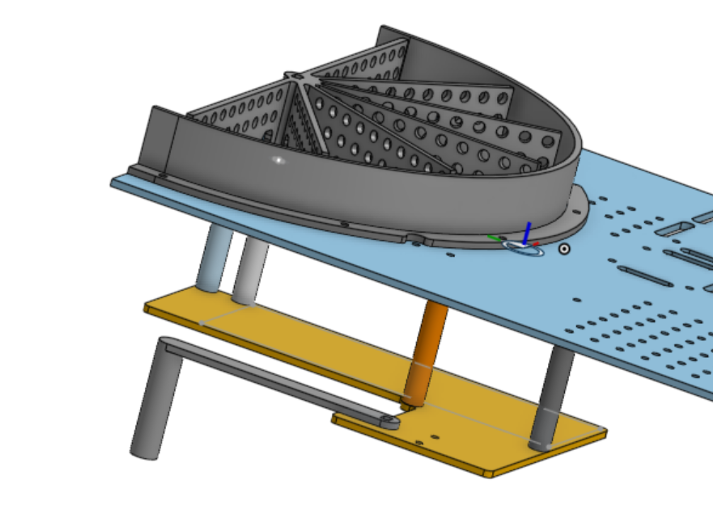
Integration And Iteration
Finally, we put together some 3D printed standoffs with heat set inserts and everything was finally connected.
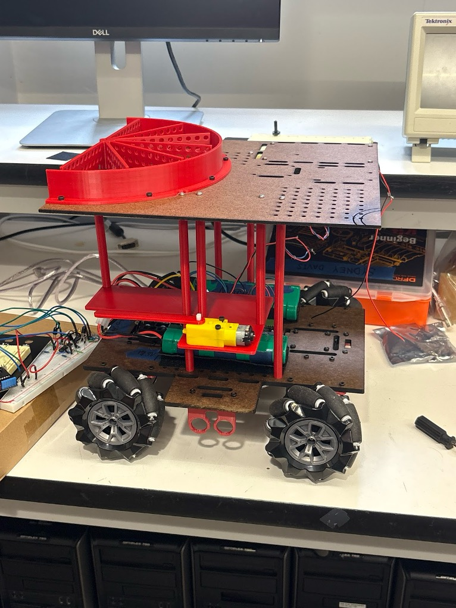
We had two concerns we wanted to test: pushing the pot and using the spinner. The standoffs are great in axial loading, however the system could be a bit wobbly with taking forces from the side as would be required to push the pot. However, we had bet that the slider resistance would be sufficiently low that this would not be a problem and fortunately this was the case. When it came to testing the the spinner, we did unfortunately run into some issues. We encountered an issue where the balls had too much friction and were spinning and getting jammed instead of sliding. This happened when they were being moved against the guide rail.
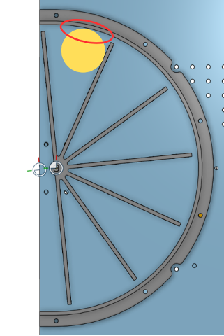
We tried to rectify this by creating a spinner with little wedges to dislodge the ball from the wall. However, this design still ran into the same issue.
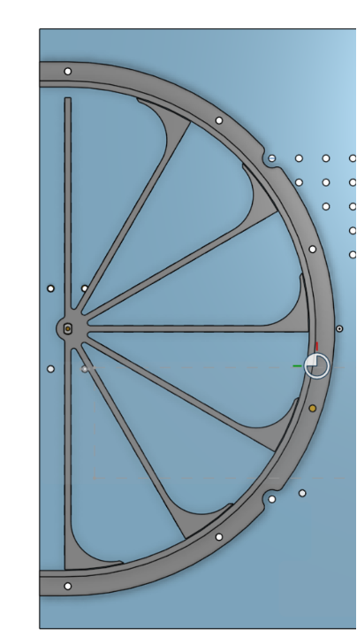
We elected to create a plate with circular holes to control the contact surface and reduce the area of contact. This seemed promising in our preliminary testing. However, this design created its own problems as the height the plate is featured off the surfacing (the height where it contacts the balls) is very important in the way it affects the balls spinning. Moreover, if we would accelerate too quickly, balls might fall out of our spinner. These would end up being problems we would continue to deal with through the final competition.
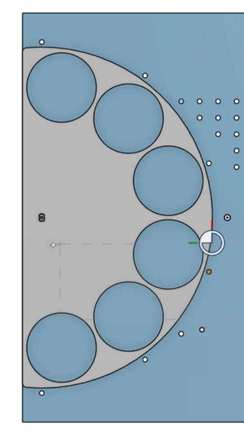
Design And Implementation Conclusion
In conclusion, our approach of creating two layers to get prototyping done early was very successful. Moreover, our careful control of the electrical component layout allowed us to save space for other add-ons determined later (e.g. an absolutely massive speaker). The greatest issue we dealt with was our spinner mechanism. In hindsight, we likely should have pivoted away from the spinner concept instead of adapting it to try to make it work. Given how much space we had on our top plate and how easy it would be to adjust the height of the robot by adjusting the standoffs, it would have been in our best interest to come up with another ball drop subsystem.
All of our CAD can be accessed through the following link: CAD Model